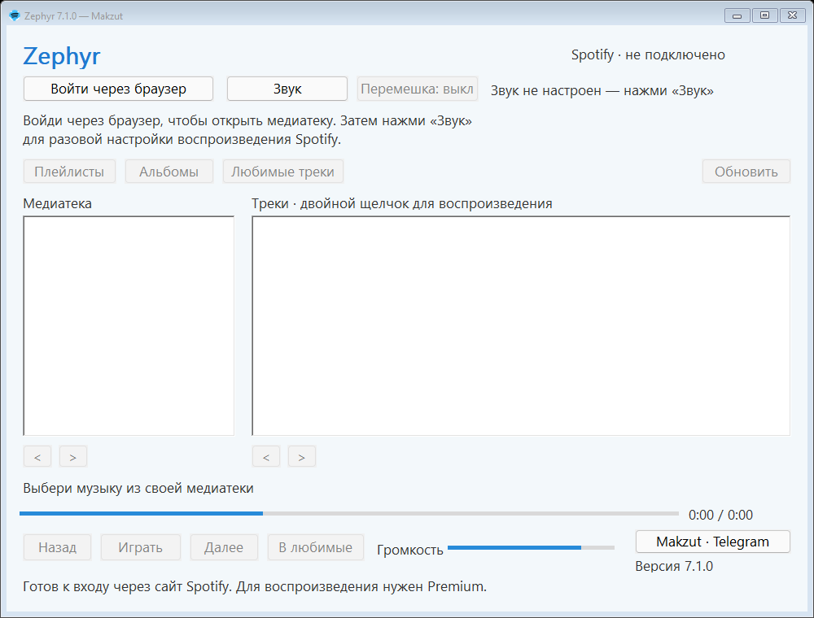

Медиатека Spotify
Плейлисты, сохранённые альбомы и любимые треки доступны из одного окна.
Нативный клиент для Windows
Zephyr собран на Rust без встроенного Chromium. Медиатека, поиск и управление воспроизведением собраны в одном спокойном окне.

Вход открывается в системном браузере, а само приложение остаётся нативным. Zephyr не тащит внутрь ещё один Chrome и не пытается заменить Windows собственным окружением.
Что внутри
Плейлисты, сохранённые альбомы и любимые треки доступны из одного окна.
Запрос отправляется только после Enter — приложение не обращается к API на каждую букву.
Перемотка одним кликом, громкость, следующий трек, перемешивание и добавление в любимые.
Rust и Win32 вместо Electron. Интерфейс запускается быстро и экономно расходует память.
Полный экран, половина экрана через Windows Snap и возврат к обычному размеру без сломанной разметки.
Кэш и рабочие файлы хранятся рядом с приложением; данные аккаунта не входят в установщик.
Настоящий интерфейс
Простой маршрут
Один компактный установщик для Windows x64.
Zephyr откроет официальный сайт Spotify в системном браузере.
Пройди разовую настройку аудио и вернись в плеер.
Выбирай музыку, управляй очередью и громкостью из Zephyr.
Перед установкой
Готов попробовать?
Установщик уже находится внутри этого сайта. Данные аккаунта в пакет не включены.
Обратная связь
Имя не требуется. Контакт можно оставить добровольно. Обращение хранится локально не более 30 дней и может быть удалено с этого браузера.